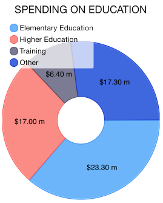
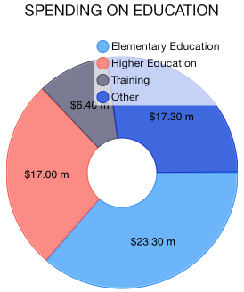

Chart: Legend
TKChart has built-in support for legends – descriptions about the charts on the plot. The items displayed in the legend are series specific i.e. for the pie chart the data points are shown in the legend, whereas for line series only one item is shown for each series.
Configure legend
If you would like to show the legend in TKChart, you should set its hidden property to NO. The default value is YES. The legend supports showing a series title.
Objective-C
chart.legend.hidden = NO;
Swift
chart.legend().hidden = false
You can alter the position and offset origin of legend by setting its position:
Objective-C
chart.legend.style.position = TKChartLegendPositionBottom;
Swift
chart.legend().style.position = TKChartLegendPosition.Bottom

The legend can be anchored to concrete side by using the following values TKChartLegendPositionLeft, TKChartLegendPositionRight, TKChartLegendPositionTop and TKChartLegendPositionBottom.
It can float by using TKChartLegendPositionFloat value. In this case, you can offset its origin manually by setting its offset and offsetOrigin properties:
Objective-C
chart.legend.style.position = TKChartLegendPositionFloating;
chart.legend.style.offsetOrigin = TKChartLegendOffsetOriginTopLeft;
chart.legend.style.offset = UIOffsetMake(10, 10);
Swift
chart.legend().style.position = TKChartLegendPosition.Floating
chart.legend().style.offsetOrigin = TKChartLegendOffsetOrigin.TopLeft
chart.legend().style.offset = UIOffsetMake(10, 10)

Customize legend
You can alter visibility of the legend’s title by changing showTitle property.
Objective-C
chart.legend.titleLabel.text = @"Companies"
chart.legend.showTitle = YES;
Swift
chart.legend().titleLabel.text = "Companies"
chart.legend().showTitle = true

In addition, you can disable the series selection via legend by setting allowSelection property to NO.
The legend can be customized by using its style object. It contains the following properties:
- position - Determines where the legend should be placed.
- offset - Determines the offset at which to place the legend, according to the specified offsetOrigin.
- offsetOrigin - Determines the starting point for the offset property.
- fill - Gets or sets the fill color to be used as a background.
- stroke - Gets or sets stroke color to be used for the legend frame.
Embeding legend outside TKChart
You can use the legend outside the chart view. You should create an instance of TKChartLegendView and add it as subview to desired view.
Objective-C
TKChartLegendView *legendView = [[TKChartLegendView alloc] initWithChart:chart];
legendView.frame = CGRectMake(20, 20, 320, 100);
[self.view addSubview:legendView];
[legendView reloadItems];
Swift
let legendView = TKChartLegendView(chart: chart)
legendView.frame = CGRectMake(20, 20, 320, 100)
self.view.addSubview(legendView)
legendView.reloadItems()